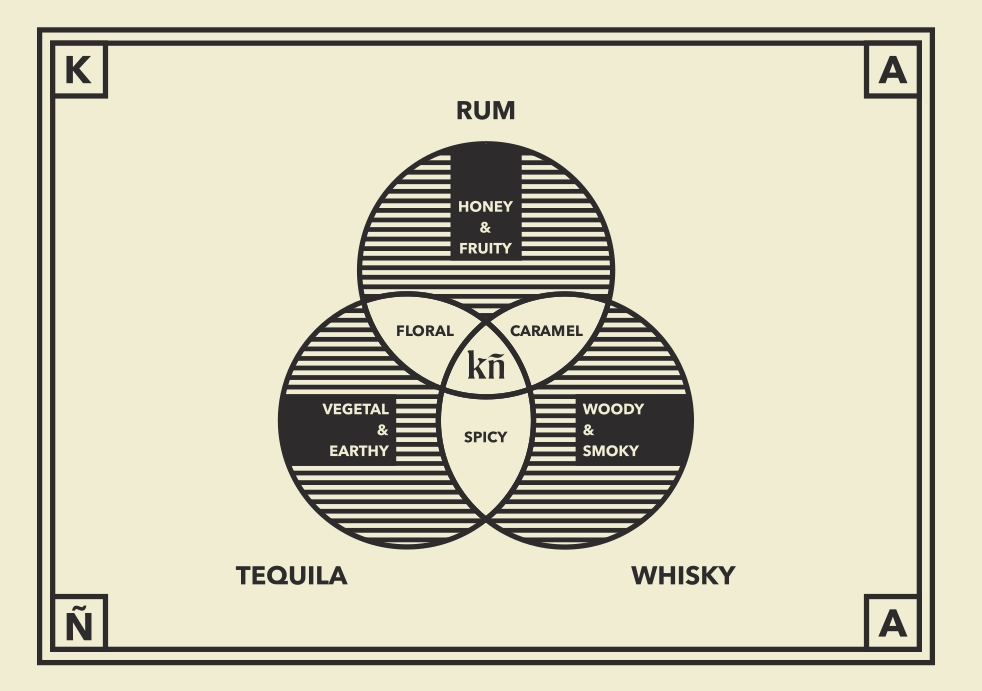

caña - caña de azúcar o dulce (BOTÁNICA) spanish translation of sugarcane.
Defining Philippine Agricole
Simplicity
With the vast majority of the available brand names in the spirits industry being cluttered with words, syllables, letters, and spaces - we feel that we have opted for a more pure and elegant approach.
Taking after brands such as Patrón, Grey Goose, Facebook and Google, we feel that the two syllable approach leaves a much stickier impression in the modern mind.
Rainforest Rhum
Rhum is a categorical product. You have your spiced rums, your whites, ambers, and darks. You have your pirate and sailor rum, your French Rhums, British Rums, Spanish Rons. We decided, since we are a unique product, to create a unique category for ourselves.
What is a Rainforest Rhum?
It's whatever we want it to be.
For us, it possibly means a few things:
- Rainforest rain water dilution for the product.
- Placing the facility within a rainforest.
- Engaging in re-forestation, which we have the privilege to undertake being linked to the Hineleban Foundation: a non-profit organizations heralding the restoration of balance to the rainforests of the Philippines.
Pure Rhum Agricole
Untainted by extenders. Philippine sugarcane is of the highest quality thanks to our soil. It is ideal for the growth of sugarcane. Our country is treasured for the richness or our slice of earth when we were discovered and introduced to the new world. The volcanic soil was a goldmine for agricultural development which is part of why our colonizers coveted our lands and why our sugarcane reaches the quality that it does.
Made solely of said quality sugarcane from a country with untapped flavor profiles in the Rhum sphere, our cane’s prestige speaks for itself and for our product. Why would we stain our quality with anything other than that?
The opportunity for introducing new and exciting notes to the known flavor wheel of the Agricole springs a myriad of possibilities for new products and variations in the future.
Single Variety
In the same vein as a single malt, the single variety approach can do wonders for the premiumization of the rum market. A select few other brands can actually boast this as well, they just don’t do it loud enough. By pioneering this path we aim to revive and utilize the ghost of whisky’s recent past and definitive future and translate that into the rum lexicon.
Heirloom Strain
The first of it’s kind, the only of its kind. Because we are using a specific heirloom strain of cane, our product’s flavor notes will be unlike any product in the market today. Many breeding programs for modern hybrids have sacrificed taste and nutrition. Locally, hybrids (the vast majority of available strains) were bred to have high sugar content and an optimal return for the production of sugar due to the needs of the sugar industry. Unlike our heirloom strain, which naturally has a rich flavor profile (as with most heirloom varieties) and is filled with the enzymes and nutrients that give our fermentations a vigorously healthy and vividly tasty bubbling. This makes heirloom strains rare and hard to find. They are our legacy, our heritage and our birthright.
OUR OWN AGRIKULTURA
From the unrealized and lost heritage of Paniqui Rum to the classic rum flavor of the widely loved Tanduay and finally, to the super-sweet & vanilla heavy french style of Don Papa, Philippine rum has only ever explored it's industrial flavor profile.
Being the first and only Philippine Rhum made solely of 100% sugarcane juice, we have the rare chance to define our country's agricultural flavor profile.
We believe that by showcasing the natural essence of our local cane and combining it with locally specific sustainable practices we can differentiate ourselves organically and through this, bring out the agricultural flavor of the country.
Our flavor profile hovers somewhere in the middle of a triad venn diagram that is comprised of: tequila, rum and whisky from its vegetal grass, sweet floral, and spicy smoke notes respectively. It’s well rounded, it’s different, and most importantly, it’s ours.